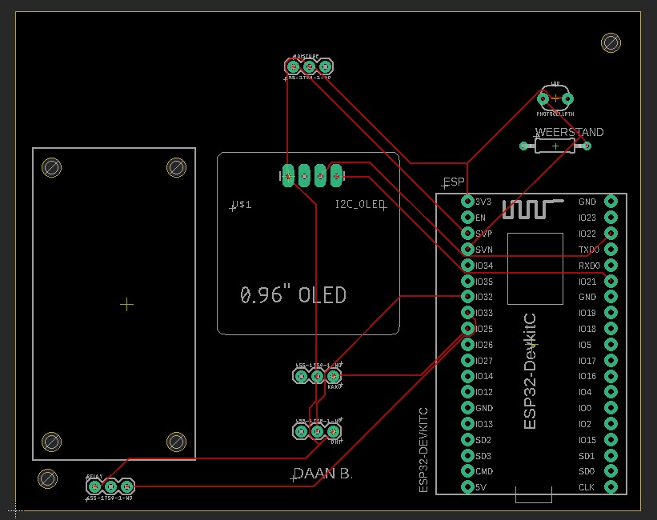

Smart Technology
Het bouwen van een Internet of Things-schakeling, het plantwatersysteem, was voor mij een bijzondere en leerzame ervaring. Het besef dat ik zelf een systeem heb gemaakt dat zelfstandig functioneert, was vreemd maar ook motiverend. Ik begon met een bakje losse onderdelen waar ik nauwelijks kennis van had en eindigde met een systeem dat op basis van verschillende factoren automatisch een plant water geeft. Dat ik het systeem uiteindelijk ook begreep, maakte het extra bijzonder.
We begonnen met het werken op een breadboard, waarbij we componenten één voor één testten met code. Toen het breadboard vol stond met kabels en de volledige code af was, werkte het systeem daadwerkelijk en begreep ik wat er gebeurde. Dit was mede mogelijk door goede uitleg en samenwerking met medestudenten.
Daarna volgde het ontwerpen van een printplaat in Eagle, opnieuw een nieuw programma om te leren. Vervolgens moest er ook nog een behuizing worden ontworpen in SolidWorks. Dit was één van de lastigste programma’s die ik ooit heb gebruikt. Omdat ik al ervaring had met SketchUp, verwachtte ik dat SolidWorks mee zou vallen, maar dat bleek een grote misrekening. Het ontwerpen van een goede behuizing vroeg om veel aandacht voor details en afmetingen. Uiteindelijk is dit grotendeels gelukt.
Het solderen van de printplaat ging beter dan verwacht, ondanks de kleine schaal. Het plaatsen van alle componenten in de behuizing bleek echter een grote uitdaging door onderdelen die net niet pasten of verkeerd waren ingeschat. Na veel aanpassingen paste uiteindelijk alles, maar bij thuiskomst bleek het systeem niet meer te werken. Dat moment van tegenslag was frustrerend en confronterend.
Eagle:

Bakje Solidworks:

Video opnamen bakje resultaat: